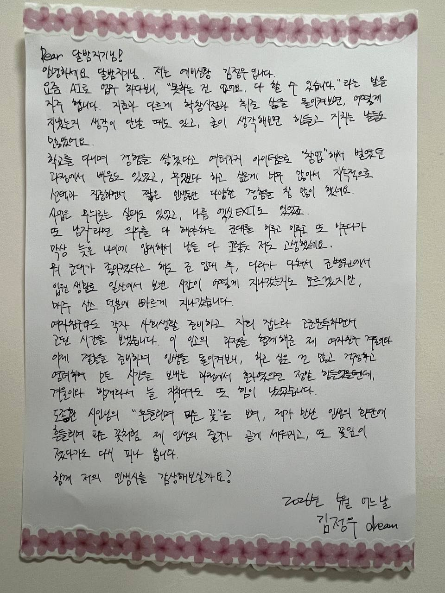
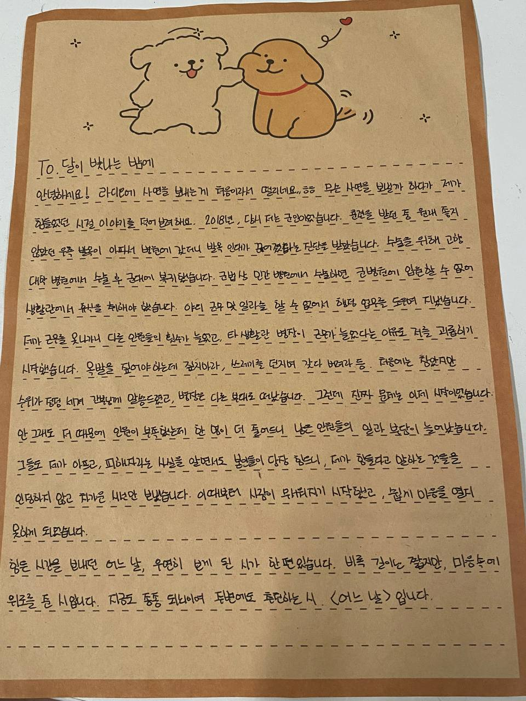

화면을 클릭하여 시작
화면을 클릭하여 시작

손글씨 엽서
의선님 이미지 대기 중
흔들리지 않고 피는 꽃이 어디 있으랴
이 세상 그 어떤 아름다운 꽃들도
다 흔들리면서 피었나니
흔들리면서 줄기를 곧게 세웠나니
흔들리지 않고 가는 사랑이 어디 있으랴
젖지 않고 피는 꽃이 어디 있으랴
이 세상 그 어떤 빛나는 꽃들도
다 젖으며 젖으며 피었나니
바람과 비에 젖으며 꽃잎 따뜻하게 피웠나니
젖지 않고 가는 삶이 어디 있으랴

손글씨 엽서
정헌님 이미지 대기 중
나는
어느 날이라는 말이 좋다.
어느 날 나는 태어났고
어느 날 당신도 만났으니깐.
그리고
오늘도 어느 날이니깐.
나의 시는
어느 날의 일이고
어느 날에 썼다.